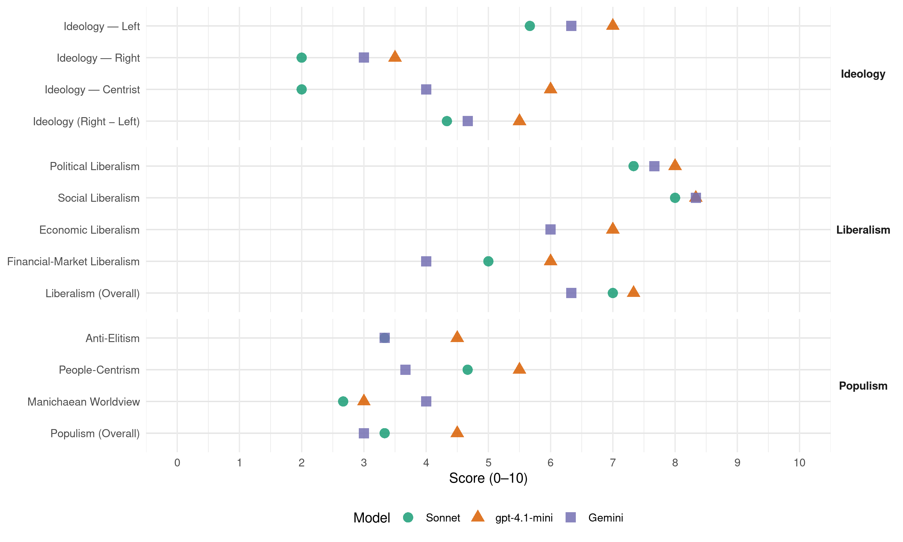

PvdA (Netherlands, 2006)
manifesto_id 22320_200611
Get full text: This site shows derived annotations and short verbatim quotes only. The full manifesto text is © Manifesto Project / WZB — obtain it via manifesto-project.wzb.eu using the manifesto_id above.
Headline scores
| Dimension | Sonnet | gpt-4.1-mini | Gemini |
|---|---|---|---|
| Populism (Overall) | 3.3 | 4.5 | 3.0 |
| Anti-Elitism | 3.3 | 4.5 | 3.3 |
| People-Centrism | 4.7 | 5.5 | 3.7 |
| Manichaean Worldview | 2.7 | 3.0 | 4.0 |
| Ideology (Right − Left) | 4.3 | 5.5 | 4.7 |
| Liberalism (Overall) | 7.0 | 7.3 | 6.3 |
| Political Liberalism | 7.3 | 8.0 | 7.7 |
| Social Liberalism | 8.0 | 8.3 | 8.3 |
| Economic Liberalism | – | 7.0 | 6.0 |
| Financial-Market Liberalism | 5.0 | 6.0 | 4.0 |
Evidence per dimension
Economic Liberalism
Gemini · score 6.0 · verified · chunk 1
“ruimte scheppen voor ondernemen”
Dus willen we economisch groeien en kansen scheppen voor ondernemen. Onder andere door de werkgeverslasten aan de onderkant van de arbeidsmarkt te verlagen.
Gemini · score 5.0 · mixed · chunk 2
“marktwerking in sommige sectoren van de zorg”
Uitgangspunt voor de PvdA is dat de patiënt centraal staat. Marktwerking in sommige sectoren van de zorg kan helpen om meer
Gemini · score 4.0 · mixed · chunk 3
“gemeenschappelijke Europese markt is goed, maar de PvdA stelt ook voorwaarden”
Een gemeenschappelijke Europese markt is goed, maar de PvdA stelt ook voorwaarden. Een goede publieke
gpt-4.1-mini · score 7.0 · verified · chunk 1
“economisch groeien en kansen scheppen voor ondernemen”
De PvdA wil economisch groeien en kansen scheppen voor ondernemen. ‘We nemen ondernemen serieus, gaan nieuwe allianties aan met het bedrijfsleven en horen ook zijn klachten.’ ‘De werkgeverslasten op arbeid worden op en vlak boven het minimumloon fors verlaagd.’ ‘We willen een sterke economie, waarbij eerlijk delen een belangrijk uitgangspunt is.’
gpt-4.1-mini · score 7.0 · verified · chunk 2
“De PvdA wil een vitale landbouw die zuinig omgaat met grond, grondstoffen en energie”
De PvdA wil een vitale landbouw die zuinig omgaat met grond, grondstoffen en energie en bijdraagt aan een landschap dat karakteristieke waarden weet te behouden.
gpt-4.1-mini · score 7.0 · verified · chunk 3
“De handel moet eerlijker; dus weg met de handelsbarrières en handelverstorende subsidies”
Ontwikkeling kan alleen slagen als mondialisering een ‘menselijk gezicht’ krijgt. De handel moet eerlijker; dus weg met de handelsbarrières en handelverstorende subsidies. Landen in ontwikkeling moeten wel de mogelijkheid krijgen hun markten tijdelijk af te schermen.
Sonnet · score 6.0 · mixed · chunk 1
“ruimte zijn voor ondernemen en voor innovatie”
Om sterk te blijven, moet er ruimte zijn voor ondernemen en voor innovatie. Nederlandse bedrijven kunnen de concurrentiestrijd met Chinese, Braziliaanse
Sonnet · score 5.0 · mixed · chunk 2
“Marktwerking in sommige sectoren van de zorg”
Marktwerking in sommige sectoren van de zorg kan helpen om meer patiëntgerichte zorg en ‘waar voor je geld’ te krijgen, maar is niet de oplossing voor de stijgende kosten.
Sonnet · score 5.0 · mixed · chunk 3
“Een gemeenschappelijke Europese markt is goed”
Een gemeenschappelijke Europese markt is goed, maar de PvdA stelt ook voorwaarden. Een goede publieke dienstverlening voor burgers als onderdeel van de Nederlandse verzorgingsstaat staat voorop.
Financial-Market Liberalism
Gemini · score 4.0 · verified · chunk 1
“Flitskapitaal in de vorm van hedge funds”
Flitskapitaal in de vorm van hedge funds of private equity investeerders roept soms ongewenste maatschappelijke effecten op. Dit kan voorkomen worden als dergelijke fondsen transparant zijn over hun beleid.
Gemini · score 4.0 · verified · chunk 3
“Wereldbank en het IMF”
Zo moeten bij organisaties als de Wereldbank en het IMF ontvangende landen meer invloed krijgen
gpt-4.1-mini · score 6.0 · verified · chunk 1
“transparant zijn over hun beleid, toezicht op fraude, investeringen in opsporing”
Flitskapitaal in de vorm van hedge funds of private equity investeerders roept soms ongewenste maatschappelijke effecten op. Dit kan voorkomen worden als dergelijke fondsen transparant zijn over hun beleid. De PvdA wil investeren in de opsporing van fraude. Het team van inspecteurs voor huursubsidiefraude wordt uitgebreid. Er wordt streng gecontroleerd op fraude met de studiefinanciering.
gpt-4.1-mini · score 6.0 · verified · chunk 3
“Wij willen meer financiële transparantie en controle van de grote geldstromen”
De bestrijding van corruptie heeft topprioriteit. Wij willen meer financiële transparantie en controle van de grote geldstromen waaronder die van ontwikkelingssamenwerking. Internationale financiële instellingen moeten meer prioriteit geven aan het bestrijden van corruptie.
Sonnet · score 5.0 · mixed · chunk 1
“Flitskapitaal in de vorm van hedge funds”
Flitskapitaal in de vorm van hedge funds of private equity investeerders roept soms ongewenste maatschappelijke effecten op. Dit kan voorkomen worden als dergelijke fondsen transparant zijn over hun beleid.
Sonnet · score 5.0 · verified · chunk 3
“meer financiële transparantie en controle”
Wij willen meer financiële transparantie en controle van de grote geldstromen waaronder die van ontwikkelingssamenwerking. Internationale financiële instellingen moeten meer prioriteit geven aan het bestrijden van corruptie.
Political Liberalism
Gemini · score 7.0 · verified · chunk 1
“Uiteindelijk beslist het parlement”
In alle openheid worden zo het nut en de problemen van oude en nieuwe regels getoetst, waarbij we ons concentreren op die regels waar ondernemers echt last van hebben. Uiteindelijk beslist het parlement.
Gemini · score 8.0 · verified · chunk 2
“essentieel voor het functioneren van de democratie”
Onafhankelijke pluriforme media zijn essentieel voor het functioneren van de democratie. De laatste jaren is het medialandschap
Gemini · score 8.0 · verified · chunk 3
“sterke internationale rechtsorde met een groter respect voor mensenrechten”
We verdedigen daarom, door een actieve diplomatie, een sterke internationale rechtsorde met een groter respect voor mensenrechten.
gpt-4.1-mini · score 8.0 · verified · chunk 1
“democratie, rechten, verkiezingen, parlement”
Een verbatim quote for lib_political must mention democracy, rights, elections, courts, media, government, parliament, or a related political-institution term. The manifesto states: ‘De vrijheid van ouders om de school te kiezen voor hun kinderen staat daarbij voorop.’ and ‘De overheid is er voor de mensen.’ and ‘De PvdA wil werken aan een beter Nederland.’ These indicate support for democratic rights and institutions.
gpt-4.1-mini · score 8.0 · verified · chunk 2
“Wij wonen in een rechtsstaat. Dat betekent dat de overheid zich aan de wet houdt”
Wij wonen in een rechtsstaat. Dat betekent dat de overheid zich aan de wet houdt en dat de overheid ervoor zorgt dat de burgers op justitie kunnen vertrouwen. Dat heeft de laatste jaren niet altijd goed uitgepakt.
gpt-4.1-mini · score 8.0 · verified · chunk 3
“Democratie, goed bestuur en sociaal beleid zijn daarbij centrale uitgangspunten”
We verdedigen daarom, door een actieve diplomatie, een sterke internationale rechtsorde met een groter respect voor mensenrechten. Democratie, goed bestuur en sociaal beleid zijn daarbij centrale uitgangspunten.
Sonnet · score 7.0 · verified · chunk 1
“democratische controle van het publiek”
vindt de PvdA daarom sturing vanuit de overheid, zeggenschap voor de gebruikers en democratische controle van het publiek onverminderd belangrijk.
Sonnet · score 7.0 · verified · chunk 2
“Onafhankelijke pluriforme media zijn essentieel”
Onafhankelijke pluriforme media zijn essentieel voor de samenleving en het functioneren van de democratie.
Sonnet · score 8.0 · verified · chunk 3
“Democratie, goed bestuur en sociaal beleid”
We verdedigen daarom, door een actieve diplomatie, een sterke internationale rechtsorde met een groter respect voor mensenrechten. Democratie, goed bestuur en sociaal beleid zijn daarbij centrale uitgangspunten.
Liberalism (Overall)
Gemini · score 6.0 · verified · chunk 1
“ruimte scheppen voor ondernemen”
Dus willen we economisch groeien en kansen scheppen voor ondernemen. Onder andere door de werkgeverslasten aan de onderkant van de arbeidsmarkt te verlagen.
Gemini · score 7.0 · verified · chunk 2
“essentieel voor het functioneren van de democratie”
Onafhankelijke pluriforme media zijn essentieel voor het functioneren van de democratie. De laatste jaren is het medialandschap
Gemini · score 6.0 · verified · chunk 3
“sterke internationale rechtsorde met een groter respect voor mensenrechten”
We verdedigen daarom, door een actieve diplomatie, een sterke internationale rechtsorde met een groter respect voor mensenrechten.
gpt-4.1-mini · score 7.0 · verified · chunk 1
“De PvdA wil investeren in onderwijs, bestrijding van discriminatie en een sterke economie”
De PvdA wil investeren in onderwijs, bestrijding van discriminatie en een sterke economie. Er is aandacht voor democratische rechten, sociale gelijkheid, economische groei en transparantie in financiële markten.
gpt-4.1-mini · score 8.0 · verified · chunk 2
“Wij wonen in een rechtsstaat. Dat betekent dat de overheid zich aan de wet houdt”
Wij wonen in een rechtsstaat. Dat betekent dat de overheid zich aan de wet houdt en dat de overheid ervoor zorgt dat de burgers op justitie kunnen vertrouwen. Dat heeft de laatste jaren niet altijd goed uitgepakt.
gpt-4.1-mini · score 7.0 · verified · chunk 3
“Democratie, goed bestuur en sociaal beleid zijn daarbij centrale uitgangspunten”
We verdedigen daarom, door een actieve diplomatie, een sterke internationale rechtsorde met een groter respect voor mensenrechten. Democratie, goed bestuur en sociaal beleid zijn daarbij centrale uitgangspunten.
Sonnet · score 7.0 · verified · chunk 1
“tolerant, rechtvaardig en veelzijdig”
We willen een trots Nederland dat bekend staat als tolerant, rechtvaardig en veelzijdig, met gezonde inwoners die kunnen blijven zeggen wat ze denken
Sonnet · score 7.0 · verified · chunk 2
“Onafhankelijke pluriforme media zijn essentieel”
Onafhankelijke pluriforme media zijn essentieel voor de samenleving en het functioneren van de democratie.
Sonnet · score 7.0 · verified · chunk 3
“Democratie, goed bestuur en sociaal beleid”
We verdedigen daarom, door een actieve diplomatie, een sterke internationale rechtsorde met een groter respect voor mensenrechten. Democratie, goed bestuur en sociaal beleid zijn daarbij centrale uitgangspunten.
Anti-Elitism
Gemini · score 6.0 · verified · chunk 1
“ondergeschikt zijn aan duurbetaalde managers”
gebruikers de weg kwijtraken en de professionals ondergeschikt zijn aan duurbetaalde managers die ver van het eigenlijke werk afstaan.
Gemini · score 1.0 · verified · chunk 2
“macht verdient tegenmacht”
Europol en Eurojust moeten worden gecontroleerd door het Europarlement én de nationale parlementen, want macht verdient tegenmacht. Het verhoor van verdachten
Gemini · score 3.0 · verified · chunk 3
“politieke benoemingencultuur van ambtelijke”
We willen afrekenen met de politieke benoemingencultuur van ambtelijke en semi-ambtelijke posities
gpt-4.1-mini · score 6.0 · verified · chunk 1
“de top 10% extra vangt, terwijl van werknemers wordt verlangd om te matigen”
Belonen van initiatief en talent betekent dat succesvolle ondernemers en goede bestuurders goed mogen verdienen. Maar de salarissen van topmanagers in het bedrijfsleven en in de semi-publieke overheid lopen uit de hand. De PvdA vindt het maatschappelijk onverantwoord en niet te verkopen dat de top 10% extra vangt, terwijl van werknemers wordt verlangd om te matigen. Voor de salarissen in de publieke en semi-publieke sector (bijvoorbeeld in het bestuur van corporaties, ziekenhuizen en toezichthouders) wil de PvdA een heldere norm stellen: maximaal het salaris van de minister-president.
gpt-4.1-mini · score 3.0 · verified · chunk 3
“Nederland lijkt zich opgesloten te hebben achter de slotbrug”
De laatste jaren lijkt van die houding weinig meer over. Nederland lijkt zich opgesloten te hebben achter de slotbrug. Die houding werkt - zeker voor een land als Nederland - niet.
Sonnet · score 5.0 · verified · chunk 1
“topmanagers enorme salarissen kunnen verdienen”
wat kennelijk betekent dat topmanagers enorme salarissen kunnen verdienen, terwijl de mensen die het werk uitvoeren wordt gevraagd om met minder genoegen te nemen
Sonnet · score 2.0 · verified · chunk 2
“ieder-voor-zich-maatschappij ontstaan”
Door te hameren op de ‘eigen verantwoordelijkheid’ is er een soort ieder-voor-zich-maatschappij ontstaan, waarin mensen van elkaar vervreemden.
Sonnet · score 3.0 · verified · chunk 3
“we vinden ook dat we Europa niet moeten overlaten aan aanhangers van de vrije markt”
Het is een kwestie van beschaving dat we niet accepteren dat Afrika als een afgeschreven continent wordt bestempeld. En we vinden ook dat we Europa niet moeten overlaten aan aanhangers van de vrije markt. Voor de PvdA geldt dat Nederland internationaal betrokken en solidair is.
Ideology — Centrist
Gemini · score 4.0 · verified · chunk 1
“De overheid is er voor de mensen”
Mensen verdienen waar voor hun belastinggeld. De overheid is er voor de mensen. De dienstverlening moet op orde zijn
gpt-4.1-mini · score 6.0 · verified · chunk 1
“We moeten van het kabinet flexibiliseren, wat betekent dat je elk moment je baan kunt verliezen terwijl de uitkeringen tegelijkertijd slechter worden”
En hoe heeft het kabinet hierop de afgelopen jaren gereageerd: de zorg en onzekerheid zijn alleen nog maar groter gemaakt. Als er ingeleverd moest worden vielen de klappen bij de kwetsbare groepen, en als er eens wat extra was, kwam het terecht bij wie het voor de wind ging. We moeten van het kabinet flexibiliseren, wat betekent dat je elk moment je baan kunt verliezen terwijl de uitkeringen tegelijkertijd slechter worden. We worden aangesproken op “eigen verantwoordelijkheid”. Een mooi streven, maar in de praktijk van het CDA en de VVD betekent het vooral dat je alles maar een beetje zelf moet uitzoeken.
gpt-4.1-mini · score 6.0 · verified · chunk 3
“De PvdA wil burgers, maatschappelijke organisaties en bedrijven betrekken bij een activistische internationale oriëntatie”
De PvdA wil burgers, maatschappelijke organisaties en bedrijven betrekken bij een activistische internationale oriëntatie van Nederland. Voor een veilige wereld moet soms hard worden opgetreden.
Sonnet · score 3.0 · verified · chunk 1
“verstandig, betrouwbaar, eerlijk en bindend leiderschap”
Dat vereist een verstandig, betrouwbaar, eerlijk en bindend leiderschap. De laatste drie regeringen stonden voor instabiliteit, onrust, wantrouwen
Sonnet · score 1.0 · verified · chunk 2
“PvdA wil deze koers radicaal keren”
Er dreigen twee Nederlanden te ontstaan waar groepen tegenover elkaar worden gezet. De PvdA wil deze koers radicaal keren en kiest voor het slaan van bruggen.
Sonnet · score 2.0 · verified · chunk 3
“Nederland internationaal betrokken en solidair is”
Voor de PvdA geldt dat Nederland internationaal betrokken en solidair is. Dat komt ook tot uiting in de Nederlandse houding ten opzichte van het buitenland.
Ideology — Left
Gemini · score 8.0 · verified · chunk 1
“tweedeling in de maatschappij is toegenomen”
Mensen zien dat de tweedeling in de maatschappij is toegenomen. Tussen arm en rijk en tussen verschillende bevolkingsgroepen.
Gemini · score 6.0 · verified · chunk 2
“tweedeling tussen arm en rijk”
De afgelopen jaren is de tweedeling tussen arm en rijk, tussen verschillende bevolkingsgroepen, tussen mensen die veel en
Gemini · score 5.0 · verified · chunk 3
“niet overlaten aan aanhangers van de vrije markt”
we vinden ook dat we Europa niet moeten overlaten aan aanhangers van de vrije markt. Voor de PvdA geldt
gpt-4.1-mini · score 7.0 · verified · chunk 1
“Er wordt bezuinigd op mensen onder de armoedegrens, terwijl de winstbelasting wordt verlaagd”
Mensen zien dat de tweedeling in de maatschappij is toegenomen. Tussen arm en rijk en tussen verschillende bevolkingsgroepen. Er wordt bezuinigd op mensen onder de armoedegrens, terwijl de winstbelasting wordt verlaagd. Het maakt voor je toekomstkansen nogal uit in welke buurt je wordt geboren.
gpt-4.1-mini · score 7.0 · verified · chunk 3
“De PvdA wil een solide begrotingsbeleid. Er komt dus een einde aan de paniekerige bezuinigingen”
Met de plannen in dit verkiezingsprogramma slaan we een aantal vliegen in één klap: de arbeidsparticipatie wordt gestimuleerd en de economische groei versterkt. Hierdoor worden tevens de problemen van de vergrijzing minder. De PvdA wil een solide begrotingsbeleid. Er komt dus een einde aan de paniekerige bezuinigingen gevolgd door impulsieve uitgaven vlak voor de verkiezingen.
Sonnet · score 6.0 · verified · chunk 1
“Eerlijk delen is de solidariteit”
Eerlijk delen is de solidariteit waarmee onze samenleving uiteindelijk het verste komt; samen staan we sterker.
Sonnet · score 5.0 · verified · chunk 2
“massief en breed te investeren in zwakke buurten”
Door massief en breed te investeren in zwakke buurten. Door het onderwijs te verbeteren, de verloedering op straat aan te pakken, door voor werk te zorgen.
Sonnet · score 6.0 · verified · chunk 3
“Europese minimumnormen voor winstbelastingen”
De PvdA is daarom voor Europese afspraken over de grondslag voor bedrijfsbelastingen, Europese minimumnormen voor winstbelastingen en Europese afspraken over heffingen op milieuverbruik.
Ideology (Right − Left)
Gemini · score 7.0 · verified · chunk 1
“tweedeling in de maatschappij is toegenomen”
Mensen zien dat de tweedeling in de maatschappij is toegenomen. Tussen arm en rijk en tussen verschillende bevolkingsgroepen.
Gemini · score 3.0 · verified · chunk 2
“tweedeling tussen arm en rijk”
De afgelopen jaren is de tweedeling tussen arm en rijk, tussen verschillende bevolkingsgroepen, tussen mensen die veel en
Gemini · score 4.0 · verified · chunk 3
“niet overlaten aan aanhangers van de vrije markt”
we vinden ook dat we Europa niet moeten overlaten aan aanhangers van de vrije markt. Voor de PvdA geldt
gpt-4.1-mini · score 6.0 · verified · chunk 1
“Samen sterker. De PvdA wil werken aan een beter Nederland”
Mensen werken niet alleen voor zichzelf, maar voor elkaar, voor hun kinderen en voor de wereld die ze achterlaten. Er zijn forse problemen om op te lossen, het zal niet vanzelf gaan, er zal wat van mensen gevraagd worden, maar met elkaar weten we dat we het niet voor niets doen. Wij willen dat mensen de kracht hebben om zelf verantwoordelijkheid te dragen voor hun leven en toekomst. Samen kunnen we meer van Nederland maken. Zodat het een land wordt waarvan iedereen denkt: ja, in zo’n land wil ik wonen! Een sterk land, waar mensen niet alleen maar goed zijn voor zichzelf, maar ook goed voor elkaar. Samen sterker. De PvdA wil werken aan een beter Nederland.
gpt-4.1-mini · score 5.0 · verified · chunk 3
“Nederland lijkt zich opgesloten te hebben achter de slotbrug”
De laatste jaren lijkt van die houding weinig meer over. Nederland lijkt zich opgesloten te hebben achter de slotbrug. Die houding werkt - zeker voor een land als Nederland - niet.
Sonnet · score 5.0 · verified · chunk 1
“sterk en sociaal twee kanten van dezelfde medaille”
Voor de PvdA zijn sterk en sociaal twee kanten van dezelfde medaille. Een sterke economie is het beste fundament voor een duurzaam sociaal stelsel
Sonnet · score 3.0 · verified · chunk 2
“investeren in zwakke buurten”
Door massief en breed te investeren in zwakke buurten. Door het onderwijs te verbeteren, de verloedering op straat aan te pakken, door voor werk te zorgen.
Sonnet · score 5.0 · verified · chunk 3
“Europese minimumnormen voor winstbelastingen”
De PvdA is daarom voor Europese afspraken over de grondslag voor bedrijfsbelastingen, Europese minimumnormen voor winstbelastingen en Europese afspraken over heffingen op milieuverbruik.
Ideology — Right
Gemini · score 3.0 · verified · chunk 1
“Ondertussen komen Polen hier werken”
Een fatsoenlijk bestaan is voor grote groepen niet zeker: nu al leeft tien procent van de mensen tussen 55 en 65 jaar beneden de armoedegrens. Ondertussen komen Polen hier werken en zullen China en India
gpt-4.1-mini · score 5.0 · verified · chunk 1
“Ondertussen komen Polen hier werken en zullen China en India alles beter, sneller en goedkoper doen”
Een grote groep mensen heeft problemen de eindjes aan elkaar te knopen: de huren en de kosten van energie en zorg zijn flink gestegen in de afgelopen jaren. Een fatsoenlijk bestaan is voor grote groepen niet zeker: nu al leeft tien procent van de mensen tussen 55 en 65 jaar beneden de armoedegrens. Ondertussen komen Polen hier werken en zullen China en India alles beter, sneller en goedkoper doen. De Europese Unie breidt uit, waardoor we steeds minder te zeggen krijgen in een Europa dat steeds meer over ons te zeggen krijgt.
gpt-4.1-mini · score 2.0 · verified · chunk 3
“Vrij verkeer van personen kan tijdelijk beperkt worden als de welvaartsverschillen te groot zijn”
Vrij verkeer van personen kan tijdelijk beperkt worden als de welvaartsverschillen te groot zijn. En voor verdere uitbreiding is draagvlak nodig onder de bevolking.
Sonnet · score 2.0 · verified · chunk 1
“krachtige maatregelen om ervoor te zorgen”
Daarom wil de PvdA krachtige maatregelen om ervoor te zorgen dat Nederlandse inkomens niet worden uitgehold door mensen die beneden de CAO-lonen werken.
Sonnet · score 2.0 · verified · chunk 2
“selectieve migratie”
Daarom bepleit de PvdA selectieve migratie. Die selectiviteit betekent dat we open blijven staan voor vluchtelingen conform de nieuwe Vreemdelingenwet, maar terughoudend zijn bij het toelaten van mensen die gezien hun opleiding of anderszins weinig kans van slagen hebben in Nederland.
Manichaean Worldview
Gemini · score 4.0 · verified · chunk 1
“als er ingeleverd moest worden vielen de klappen bij de kwetsbare groepen”
En hoe heeft het kabinet hierop de afgelopen jaren gereageerd: de zorg en onzekerheid zijn alleen nog maar groter gemaakt. Als er ingeleverd moest worden vielen de klappen bij de kwetsbare groepen, en als er eens wat extra was
gpt-4.1-mini · score 5.0 · mixed · chunk 1
“De laatste drie regeringen stonden voor instabiliteit, onrust, wantrouwen, confrontatie en polarisatie. Nu is er behoefte aan eenheid, vertrouwen, samenwerking en redelijkheid.”
Dat vereist een verstandig, betrouwbaar, eerlijk en bindend leiderschap. De laatste drie regeringen stonden voor instabiliteit, onrust, wantrouwen, confrontatie en polarisatie. Nu is er behoefte aan eenheid, vertrouwen, samenwerking en redelijkheid. Die redelijkheid herkent niet alleen bedreigingen, maar ziet ook de andere kant.
gpt-4.1-mini · score 3.0 · verified · chunk 3
“Het is een kwestie van beschaving dat we niet accepteren dat Afrika als een afgeschreven continent wordt bestempeld”
We hebben alle belang bij rust en stabiliteit in de wereld. Het is een kwestie van beschaving dat we niet accepteren dat Afrika als een afgeschreven continent wordt bestempeld. En we vinden ook dat we Europa niet moeten overlaten aan aanhangers van de vrije markt.
Sonnet · score 4.0 · verified · chunk 1
“klappen bij de kwetsbare groepen”
Als er ingeleverd moest worden vielen de klappen bij de kwetsbare groepen, en als er eens wat extra was, kwam het terecht bij wie het voor de wind ging.
Sonnet · score 2.0 · verified · chunk 2
“tweedeling tussen arm en rijk”
De afgelopen jaren is de tweedeling tussen arm en rijk, tussen verschillende bevolkingsgroepen, tussen mensen die veel en mensen die nauwelijks kansen krijgen, toegenomen.
Sonnet · score 2.0 · verified · chunk 3
“te vaak wordt met de linkerhand gegeven”
Te vaak wordt met de linkerhand gegeven (via ontwikkelingshulp) terwijl met de rechterhand genomen wordt van ontwikkelingslanden (via o.a. handels-, landbouw-, buitenlandse en industrieel beleid).
People-Centrism
Gemini · score 5.0 · verified · chunk 1
“De overheid is er voor de mensen”
Mensen verdienen waar voor hun belastinggeld. De overheid is er voor de mensen. De dienstverlening moet op orde zijn
Gemini · score 2.0 · verified · chunk 2
“uitgangspunt voor de PvdA is dat de patiënt centraal staat”
concurreren op goede zorginkoop en dienstverlening aan hun klanten. Uitgangspunt voor de PvdA is dat de patiënt centraal staat. Marktwerking in sommige sectoren
Gemini · score 4.0 · verified · chunk 3
“niet de beleidsmaker centraal te stellen, maar de burger”
kwaliteit? Door niet de beleidsmaker centraal te stellen, maar de burger! Ons uitgangspunt is diversiteit.
gpt-4.1-mini · score 7.0 · verified · chunk 1
“Samen sterker. De PvdA wil werken aan een beter Nederland”
Mensen werken niet alleen voor zichzelf, maar voor elkaar, voor hun kinderen en voor de wereld die ze achterlaten. Er zijn forse problemen om op te lossen, het zal niet vanzelf gaan, er zal wat van mensen gevraagd worden, maar met elkaar weten we dat we het niet voor niets doen. Wij willen dat mensen de kracht hebben om zelf verantwoordelijkheid te dragen voor hun leven en toekomst. Samen kunnen we meer van Nederland maken. Zodat het een land wordt waarvan iedereen denkt: ja, in zo’n land wil ik wonen! Een sterk land, waar mensen niet alleen maar goed zijn voor zichzelf, maar ook goed voor elkaar. Samen sterker. De PvdA wil werken aan een beter Nederland.
gpt-4.1-mini · score 4.0 · verified · chunk 3
“Voor de PvdA geldt dat Nederland internationaal betrokken en solidair is”
Voor de PvdA geldt dat Nederland internationaal betrokken en solidair is. Dat komt ook tot uiting in de Nederlandse houding ten opzichte van het buitenland.
Sonnet · score 6.0 · verified · chunk 1
“samen kunnen we meer van Nederland maken”
Wij willen dat mensen de kracht hebben om zelf verantwoordelijkheid te dragen voor hun leven en toekomst. Samen kunnen we meer van Nederland maken.
Sonnet · score 4.0 · verified · chunk 2
“Een ongedeeld Nederland veronderstelt”
Een ongedeeld Nederland veronderstelt dat de geografische scheidslijnen tussen kansarm en kansrijk worden geslecht.
Sonnet · score 4.0 · verified · chunk 3
“Een bestuur van en voor mensen”
De PvdA wil een bindend bestuur. Een bestuur van en voor mensen. Dat gaat over zorg, onderwijs, openbaar vervoer en andere vormen van publieke dienstverlening.
Populism (Overall)
Gemini · score 5.0 · verified · chunk 1
“ondergeschikt zijn aan duurbetaalde managers”
gebruikers de weg kwijtraken en de professionals ondergeschikt zijn aan duurbetaalde managers die ver van het eigenlijke werk afstaan.
Gemini · score 1.0 · verified · chunk 2
“macht verdient tegenmacht”
Europol en Eurojust moeten worden gecontroleerd door het Europarlement én de nationale parlementen, want macht verdient tegenmacht. Het verhoor van verdachten
Gemini · score 3.0 · verified · chunk 3
“politieke benoemingencultuur van ambtelijke”
We willen afrekenen met de politieke benoemingencultuur van ambtelijke en semi-ambtelijke posities
gpt-4.1-mini · score 6.0 · verified · chunk 1
“Samen sterker. De PvdA wil werken aan een beter Nederland”
Mensen werken niet alleen voor zichzelf, maar voor elkaar, voor hun kinderen en voor de wereld die ze achterlaten. Er zijn forse problemen om op te lossen, het zal niet vanzelf gaan, er zal wat van mensen gevraagd worden, maar met elkaar weten we dat we het niet voor niets doen. Wij willen dat mensen de kracht hebben om zelf verantwoordelijkheid te dragen voor hun leven en toekomst. Samen kunnen we meer van Nederland maken. Zodat het een land wordt waarvan iedereen denkt: ja, in zo’n land wil ik wonen! Een sterk land, waar mensen niet alleen maar goed zijn voor zichzelf, maar ook goed voor elkaar. Samen sterker. De PvdA wil werken aan een beter Nederland.
gpt-4.1-mini · score 3.0 · verified · chunk 3
“Nederland lijkt zich opgesloten te hebben achter de slotbrug”
De laatste jaren lijkt van die houding weinig meer over. Nederland lijkt zich opgesloten te hebben achter de slotbrug. Die houding werkt - zeker voor een land als Nederland - niet.
Sonnet · score 5.0 · verified · chunk 1
“de tweedeling in de maatschappij is toegenomen”
Mensen zien dat de tweedeling in de maatschappij is toegenomen. Tussen arm en rijk en tussen verschillende bevolkingsgroepen.
Sonnet · score 2.0 · verified · chunk 2
“Er dreigen twee Nederlanden te ontstaan”
Er dreigen twee Nederlanden te ontstaan waar groepen tegenover elkaar worden gezet. De PvdA wil deze koers radicaal keren.
Sonnet · score 3.0 · verified · chunk 3
“Een bestuur van en voor mensen”
De PvdA wil een bindend bestuur. Een bestuur van en voor mensen. Dat gaat over zorg, onderwijs, openbaar vervoer en andere vormen van publieke dienstverlening.
Social Liberalism